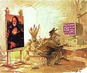

Encuentro ahora que las obras de Santa Teresa (mi santa preferida, si vale la expresión) están al alcance de la mano: acá.
Dice Vicente Zito Lema ( en la ya mencionada revista Parte de Guerra) que dice Leopoldo Marechal que el personaje Samuel Tesler de su novela Adán Buenosayres no es otro que el poeta Jacobo Fijman .
Curioso...
-
Los ojos mueren en la alegría de la visión desnuda de carne y de palabras,
en la tierra desnuda y en el cielo desnudo,
en el día desnudo y en la noche desnuda bajo los cielos todos crecidos.
Es demasiado bella la noche de oro de muros y banderas luminosas.
Corremos en la noche de plata bajo la noche de oro.
Tierra desnuda, tierra perfecta, cielo desnudo, cielo perfecto.
Voces desnudas de la voz eterna.
En la noche de oro nos llaman las campanas,
Y oímos el vuelo de las palomas desde la noche de plata
bajo la noche de oro.
¿Cuándo y cómo se escribieron los evangelios ? me preguntaba un amigo.
Acá van algunos links:
http://es.geocities.com/codices2002/cuando.htm
http://www.corazones.org/biblia_y_liturgia/biblia/evangelios_fechas.htm
http://www.historialago.com/xto_03205_evangelios_01.htm
En inglés, hay muchísimo más material, como siempre.
Entrevista (un embole) de Clarín a Cecilia Roth, que -Fabiana Cantilo mediante- se las arregla para dar una lección de espiritualidad cristiana (!). Sí señor; dice lo mismo que C. S. Lewis ( se acuerdan de la burra de Balaam ? )
Veamos lo que dice Cecilia Roth:
-
- (Roth) No soy estable ni serena. Soy compulsiva y, cuando estoy cruzada, me pongo muy pesada.
- (Clarín) Noto que no te elegirías para convivir...
- (Roth) Fabi Cantilo dice: Si no fuera yo, no me soportaría.
-
¿Qué significa eso de que tengo que amar a mi prójimo como
a mí mismo?; ¿concretamente, cómo me amo a mí mismo?
Si lo pienso un poco, encuentro que no tengo exactamente un
sentimiento de cariño o afecto por mí, y ni siquiera
gozo siempre de mi propia compañía. Así es que
aparentemente "Ama a tu prójimo" no
significa "siente cariño" por él
o "encuéntralo atractivo". Eso es obvio, en
realidad, porque no se puede sentir cariño por una persona haciendo un esfuerzo.
¿Pienso bien de mí mismo, creo
que soy un sujeto agradable? Bien, temo
que a veces sí lo hago (y, sin duda, ésos son mis peores momentos),
pero ésa no es la razón de que me ame. De hecho, es al revés:
podré decir que "me soy agradable porque me
quiero a mí mismo" ; pero nunca diré que "me quiero a mí
mismo porque me agrado". Así es que
amar a mis enemigos aparentemente tampoco significa creerlos agradables.
Y eso es un enorme alivio; porque a veces imaginamos que
perdonar a nuestros enemigos significa darse cuenta de que,
después de todo, realmente no son tan malas personas,
cuando es evidente que lo son.
Demos un paso más. En mis momentos más lúcidos
no sólo no me creo un hombre agradable, sino que sé que soy
bastante odioso. Algunas de las cosas que he hecho
me producen horror y disgusto. Así es que aparentemente se
me permite abominar y odiar algunas de las cosas que hacen mis
enemigos. Y ahora que lo pienso, recuerdo a algunos maestros cristianos que me
decían hace mucho tiempo que debo odiar las acciones de un hombre malo,
pero no odiar al hombre malo; o, como ellos
lo decían, odiar el pecado pero no al pecador.
Durante mucho tiempo pensé que ésta era una distinción tonta que
se quedaba en sutilezas: ¿cómo se podía
odiar lo que un hombre hacía y no odiar al mismo
hombre? Pero años después se me ocurrió que había una persona
a quien yo le había estado haciendo eso durante
toda mi vida: yo mismo.
Por más que me repugnara mi propia cobardía o soberbia o
codicia, seguía queriéndome. Sin la menor dificultad. De
hecho, la razón exacta de que yo odiara esas cosas es
que amaba al hombre: justamente porque me amaba, me dolía
encontrar que era la clase de persona que hacía esas cosas.
Por eso, el cristianismo no quiere reducir ni en
un átomo el odio que sentimos por la crueldad y la traición.
Debemos odiarlas. No debemos retractar ni una sola de
las palabras que hemos dicho contra ellas.
Pero el cristianismo sí quiere que las odiemos de la
misma forma en que odiamos algo en nosotros mismos: lamentando que
esa persona lo haya hecho, y esperando que -si
de alguna manera es posible- de algún modo, alguna
vez, en algún lugar, pueda sanar y hacerse humana
nuevamente.
Es fácil engañarse sobre esto. La verdadera prueba es ésta:
Supongamos que uno lee en el diario una historia
de atrocidades inmundas cometidas por nuestros "enemigos". Supongamos
que después surge algo que indica que esa historia podría
no ser completamente verdadera, o no tan mala
como se la presentó.
Lo primero que uno siente, es ¿"gracias a Dios
que ni siquiera ellos son tan malos", o
un sentimiento de desilusión, e incluso una decisión
de aferrarse a la primera historia por el simple
placer de creer a nuestros enemigos lo más malos posibles?
Si lo segundo, es de temer que se trate
del primer paso en un proceso que, si lo
seguimos hasta el final, hará demonios de nosotros. Uno empieza a
desear que el negro sea un poquito más negro. Si damos
rienda suelta a ese deseo, más tarde desearemos ver el
gris como negro, y luego ver el blanco mismo como negro.
Finalmente, insistíremos en ver todo -Dios y nuestros amigos,
incluso nosotros mismos- como malo, y no podremos parar
de hacerlo: nos quedaremos fijos para siempre en un
universo de odio puro.
Jah!, ...andá a contarle esto a Hebe de Bonafini...
Otros links sobre C. S. Lewis acá y acá
A propósito del weblog abajo citado, el ciprés en el patio (lindo nombre por otra parte): el diseño es un lujo.
Si a veces te sentís como que te falta el aire en misa, por los sermones idiotas (onda "Jesús-nos-invita" y "desde-lo-más-íntimo-y-profundo-de nuestros-corazones" , o pose de Cristiano-Progresista-Preocupado-por-la-Injusticia-Social), y por la liturgia idem, y vivís en Buenos Aires, zona Retiro ... (pucha, demasiados requisitos ? no queda nadie ?... bueno, no hace falta vivir cerca, acuérdense de la magia de Internet):
Madre Admirable, una parroquia nada común; o acaso mejor dicho: un párroco (Gustavo E. Podestá) nada común.
Están on line los sermones (bizarros podríamos decir).
No es tan difícil, para los left-wing-challenged, encontrar alguna cueva de católicos tradicionalistas, reaccionarios en política y solemnes-hieráticos en liturgia. Lo difícil es encontrar eso junto con un poco de inteligencia, buen gusto, audacia para la exégesis e interés sincero por la filosofía moderna.
Muy interesante (es muy cierto que esta expresión es triste, en general; pero no siempre).
Y no digo que esta mezcla rara sea la justa. Ni digo que les vaya a gustar (tampoco yo estoy seguro de que me guste del todo), pero es uno que rompe el molde...
Otro día tal vez nos metamos a recortar cositas de los sermones.
Entrevista en Zenit a obispo de Canadá, sobre confesiones al por mayor.
Al menos, hay que reconocer que por estos pagos no han llegado estos "experimentos" ... que yo sepa.
- Dadnos, Dios mío, Vos a entender qué es lo que se da
a los que pelean varonilmente en este sueño de esta miserable vida.
(otra que supo pelear varonilmente; y que supo envejecer)
Y como para no confundirnos, no ... ? Que una cosa es el perfil bajo y otra es la cobardía o la pereza....
Releyendo lo que decía abajo sobre el tratamiento que los amigos de los medios dieron a la carta del Papa, y sospechando lo irritante que debe ser para tantos (católicos incluidos) ese viejito polaco que no quiere hacer la vista gorda ante tantas agachadas... Es muy mal pensado uno si sospecha que la repetidísima "noticia" del tipo " preocupa la salud del Papa", es, en el fondo, una expresión de deseos ?
-
DESMENTIDA OFICIAL DEL VATICANO
Nuevos rumores sobre la salud del Papa
Como tantas veces en los últimos años, la salud del papa Juan Pablo II puso al rojo vivo las redacciones de todo el mundo. Los rumores sobre un deterioro del estado del Pontífice arreciaron en la tarde de ayer, y obligaron a la oficina de prensa del Vaticano a desmentirlos por completo....
Algún día, será realmente una noticia, y muchos respirarán aliviados; y muchos estaremos tristes.
Pero, en otro sentido, y en el fondo, estaremos alegres. Y agradecidos.
¡Nos incluyeron en weblogs.com.ar!.
Qué cosa.. no estoy seguro de no haber escuchado, recién, tapado por la voz de Cesaria Evora, la voz de mi ángel de la guarda, que me decía :
_ perfil bajo, hernan.... acordate... perfil bajo..
Yo no estoy del todo convencido; y ese vocabulario periodístico no me suena muy angelical que digamos.
Pero también es para tener en cuenta lo que decía un amigo: Ultimamente, también Dios anda con perfil bajo....
Y Eliade, leyendo a Bonhoeffer (teólogo protestante):
-
Los cristianos hoy -de hecho todos los hombres- deben vivir etsi Deus non daretur,
"como si Dios no fuera algo dado" (esa expresión es frecuente en B., sobre todo
desde que sabe que sus días están contados). La secularización radical de la vida debe
hacerse, no contra el cristianismo, sino en su nombre. Los cristianos tienen el deber de aceptar
y de asumir esa secularización. Pero, en qué consistiría entonces su "religiosidad"?
He aquí la respuesta de B. : "participar en el sufrimiento de Dios en un mundo sin Dios..."
En resumen: la humanidad adulta renuncia a Dios. En ese mundo -como proscripto- Dios sufre, es humillado; la única experiencia auténtica del cristianismo (sólo del cristianismo?) sería solidarizarse en ese sufrimiento.
El desesperado intento, el de Bonhoefer para encontrar una significación religiosa en todo lo que es natural, profano, racional....
Esta la saco de relapsed catholic (otro blog de EEUU): Bueno. La (ujhm!) Comisión de Paz y Justicia de la Arquidiócesis de Brisbane exhorta a los fieles a unirse al boycott del chocolate: nada de agasajar con el desayuno a la madre en su día (una tradición en eeuu, al parecer). ¿Por qué? Para protestar contra el trabajo infantil , esclavizador y abusivo en las plantaciones de cacao en Africa...
Como dice Kathy: strictly for idiots "... No more poignant example could be found of the Catholic Left's tenuous hold on common sense and reality..."
Clarín publica dos notas "religiosas" sobres temas ya tocados acá:
Sacerdote detenido en EE.UU por abusos sexuales, y sobre el documento del Papa acerca de la confesión.
Para notar de esta última: el título (La Iglesia pide que sus fieles se confiesen más seguido) y el contenido (sobre todo las palabras del monseñor), es lo que se llama en términos deportivos " tirar la pelota afuera".
El Papa llama la atención al clero falluto ... y éstos presentan la cosa como si la carta hubiera sido dirigida a los fieles...
Curioso... tan dispuestos que están siempre los obispos para hacer mea culpas (cuando eso cae bien a los medios), y cuando llegan estas "correcciones" del Vaticano todos miran para otro lado...
Si pasaste los treinta y vivís en un lugar como Buenos Aires, y leés algo de poesía española, tarde o temprano los versitos de Fray Luis de León te tienen que terminar pegando...
-
¡Qué descansada vida
la del que huye del mundanal ruïdo,
y sigue la escondida
senda, por donde han ido
los pocos sabios que en el mundo han sido;
...
-
Un no rompido sueño,
un día puro, alegre, libre quiero;
no quiero ver el ceño
vanamente severo
de a quien la sangre ensalza o el dinero.
Despiértenme las aves
con su cantar sabroso no aprendido;
no los cuidados graves
de que es siempre seguido
el que al ajeno arbitrio está atenido.
Vivir quiero conmigo,
gozar quiero del bien que debo al cielo,
a solas, sin testigo,
libre de amor, de celo,
de odio, de esperanzas, de recelo.
....
Y sin embargo, está bien, creo... Ni romanticismo ni budismo, diría, si tuviera que defenderlo... Pero qué necesidad tiene Fray Luis de que yo lo defienda!
-
Del monte en la ladera,
por mi mano plantado tengo un huerto,
que con la primavera
de bella flor cubierto
ya muestra en esperanza el fruto cierto.
La carta del Papa la obtuve de ZENIT, una agencia informativa católica.
Es bastante buena, para lo que hay, y puedo recomendar a los interesados que la visiten y se suscriban (gratis) al servicio de noticias diarias por email.
Pero... también es verdad que, sin caer en ridiculeces de fundamentalistas de derecha ni de
activistas de izquierda, manteniendo un cierto equilibrio y buen gusto, no dejan de caer en pecadillos
de (des)honestidad intelectual. El virus sectario ataca a los que defienden a la iglesia como si fuera
un partido político o una ideología; acá hay poco de eso; pero algo hay.
Por ejemplo: qué tienen para decir del caso de abuso sexual en EEUU?
Con el título de la nota uno se hace una idea:
Casos de abuso sexual dan lugar a retorcidos ataques contra la Iglesia
Típico. Lamentan y condenan los hechos (los hechos de los curas, del presunto encubrimiento episcopal, ni una palabra), pero el núcleo
de la nota es contraatacar a "los ataques de los medios".
Es para darle la razón a estos católicos yanquis que estoy leyendo, que suelen decir que y progresistas
y conservadores cada uno por su lado, son los culpables... unos por no saber ver (y prever) el mal, y los otros
por taparlo...
Seguramente la cuestión es más complicada de lo que uno (yo sobre todo) puedo comprender o despachar con una frase incriminatoria,...
Quedemos en que Zenit es un sitio recomendable, para lo que hay. Y sobre el sectarismo católico hablaremos otro día.
Un nuevo documento (carta apostólica) MISERICORDIA DEI del Papa, para obispos y sacerdotes.
Sobre el sacramente de la confesión. Resumido a la porteña, sería algo como:
- ¡Pero qué cornos se han creído estos curas mundanos y fallutos!
¡ A ver si se dejan de hacer payasadas, de hacerse los simpáticos, de esquivarle el bulto
a las cosas serias, y se ponen de una vez a confesar como Dios manda... caramba!
El Papa es un poco más circunspecto en el lenguaje, pero la idea es esa. Por ejemplo:
- "... La Iglesia ha visto siempre un nexo esencial entre el juicio confiado a los sacerdotes en este Sacramento y la necesidad de que los penitentes manifiesten sus propios pecados,(8) excepto en caso de imposibilidad. Por lo tanto, la confesión completa de los pecados graves, siendo por institución divina parte constitutiva del Sacramento, en modo alguno puede quedar confiada al libre juicio de los Pastores (dispensa, interpretación, costumbres locales, etc.).... "
- "... en algunas regiones se observa la tendencia al abandono de la confesión personal, junto con el recurso abusivo a la «absolución general» o «colectiva», de tal modo que ésta no aparece como medio extraordinario en situaciones completamente excepcionales. Basándose en una ampliación arbitraria del requisito de la grave necesidad,(10) se pierde de vista en la práctica la fidelidad a la configuración divina del Sacramento y, concretamente, la necesidad de la confesión individual, con daños graves para la vida espiritual de los fieles y la santidad de la Iglesia. ... "
- "... todos los que, por su oficio, tienen encomendada la cura de almas, están obligados a proveer que se oiga en confesión a los fieles que les están encomendados y que lo pidan razonablemente; y que se les dé la oportunidad de acercarse a la confesión individual, en días y horas determinadas que les resulten asequibles ... "
- "... La falta de disponibilidad para acoger a las ovejas descarriadas, e incluso para ir en su búsqueda y poder devolverlas al redil, sería un signo doloroso de falta de sentido pastoral en quien, por la ordenación sacerdotal, tiene que llevar en sí la imagen del Buen Pastor... " (al que le caiga el sayo...)
- "... se reprueba cualquier uso que restrinja la confesión a una acusación genérica o limitada a sólo uno o más pecados considerados más significativos... "
- "... El lugar propio para oír confesiones es una iglesia u oratorio... "
- "... no pueden recibir validamente la absolución los penitentes que viven habitualmente en estado de pecado grave y no tienen intención de cambiar su situación... "
En EEUU, como sabemos (aunque los medios de por acá no han hecho tanto ruido como uno esperaría) el ambiente católico está conmocionado por el tema de los sacerdotes que "molestaban" a chicos... El escándalo golpea sobre todo a muchos obispos, acusados de hacer la vista gorda.
Es notable, como decía antes, la temperatura que tiene la cuestión allá, como es notable la severidad con la que tantos católicos (de tendencias más bien conservadoras) están atacando a los obispos; exigiendo renuncias y hasta proponiendo boycots.
Este interesante artículo, que he visto linkeado en varias weblogs católicas de por allá, de un tal Michael Dubruiel, laico, da una idea de cómo viene la mano.
Traducción -levemente libre- mía. Si leen inglés les conviene ver el original
Los evangelios están llenos de parábolas referidas al mensaje que Jesús da a sus discípulos, y cuánto importa el uso que se hace de él. Enterrar el mensaje, esconderlo en un cajón o "maltratar a los criados y a las criadas, comer, beber y emborracharse" (Lucas 12:45), todo eso queda condenado en forma tajante. En las parábolas, el Rey -o Señor- siempre expulsa del reino a semejantes servidores.
A corta distancia de donde vivo, en los EUU , se ven monstruosos edificios abandonados, que alguna vez estuvieron llenos de religiosos católicos. Quedan como monumentos que recuerdan lo que sucede cuando la Iglesia (en este caso, algunas órdenes religiosas) no se mantiene firme en la verdad.
Y en los últimos 40 años, varios elementos de la Iglesia han sido
renuentes a mantenerse firmes en la verdad.
Lo que movía todo no era otra cosa, frecuentemente, que la codicia;
y no sorprende que intituciones que antaño fueron
grandes hayan terminado derrumbándose en el camino, como resultado.
Las asociaciones católicas no se han mantenido firmes en la fe;
eso no hubiera facilitado la obtención de subsidios federales.
Los hospitales católicos han dejado de servir al pobre; han
faltado a la justicia con sus empleados y han permitido prácticas
que pugnan con la enseñanza de la Iglesia Católica.
Los colegios católicos no han sido lugares donde los católicos crecían
en su fe; más bien, a menudo fueron lugares para perderla.
Patricia Sodano Ireland ha escrito su experiencia en el Colegio Boston
(There We Stood, Here We Stand): allí terminó desencantándose con
la Iglesia oyendo a sus profesoras machacando en favor de la ordenación
sacerdotal femenina. Y abandonó la Iglesia católica, y fue pastora luterana.
Ahora, años después ha retornado a la Iglesia, resignando la posibilidad del sacerdocio.
Por que ? porque la Iglesia (al menos) sí se mantuvo firme en la defensa de la vida.
Detrás de todo esto, hay Obispos; que, como los diez Apóstoles se mantienen
encerrados, atemorizados, en sus oficinas.
¿Temor de perder dinero ? ¿Temor de la opinión pública ? ¿Temor de decir
cualquier cosa que pudiera dañar sus chances de mejorar su
posición ?
No se sabe; lo que es claro es que temen más a
algunos "príncipes mortales" que al Príncipe de la Paz.
Y mientras tanto, los otros Apóstoles, los Judas y Tomás, no están encerrados.
Los Judas parecen entregados, con un tesón demoníaco, a la autodestrucción. Y eliminan todo signo de Cristo de las escuelas, de los hospitales y de los templos. Rezan a la "madre Tierra" en vez de rezar a Dios. Parecen ansiosos de conferenciar con las religiones rivales y con las autoridades seculares, para proponerles: "Cuánto nos darás si te lo entrego en tus manos? " Y dejan tras su paso las iglesias vacías, los hospitales cerrados, los monasterios en ruinas y los estudiantes insatisfechos y desesperados. Saben que su tiempo es breve, y apuran el suicidio.
Los Tomás ... ellos recorren las calles, tratando de reunir a los combatientes; están dispuestos a viajar con Jesús a Jerusalén para morir con él. Buscan la verdad, y la dicen. Se enfrentan a los Judas, aunque los apóstoles temerosos no los apoyan. En realidad, son considerados como "los locos".
Y en medio de esto, nuestro Señor llega, mostrando sus heridas a los obispos encerrados bajo llave. "Miren, el daño que han hecho a mi cuerpo, la iglesia! Y levanta hacia ellos sus manos perforadas y dice "Paz a vosotros! Esto es lo que vuestro silencio ha hecho, vuestra inacción, vuestra incapacidad de pastorear en la confianza de que yo estoy con vosotros!"
¿Y ahora qué? ¿ Una nueva política ? Más asociaciones de laicos con más abogados y más psicólogos ? ¿ Son estas las cosas que el Señor dará a sus Apóstoles ?
No. El sopla el Espiritu sobre ellos : "Aquellos pecados que vs. perdonen, quedarán perdonados; y aquellos pecados que vds. retengan, quedarán retenidos" (Juan 20;23)
¿Retener pecados? No es esto lo que la Iglesia de estos tiempos está dispuesta a hacer... Está casi siempre dispuesta para perdonar y olvidar todo, pero no a retener ...
Pero es necesario retener ciertos pecados; porque cuando se los perdona fácilmente se termina destruyendo el cuerpo de Cristo. Es necesario excomulgar a ciertos hombres, por el bien de sus almas ( para que puedan retornar a la verdad) y para el bien de la iglesia.
¿Cómo podría llegar este mensaje a los líderes de la Iglesia ? ¿Se aparecerá Cristo a los obispos en las personas de las víctimas que han sido violentadas? ¿se aparecerá en las personas de los que hambrean la verdad?
En medio de sus fracasos, la iglesia sigue testimoniando el éxito de nuevas órdenes
religiosas, de nuevas formas de evangelización y nuevas misiones en nuestra sociedad.
Lo que todas ellas tienen en común es la "verdad". Una Madre Angélica no tiene
vergüenza de la verdad, y así ha construido un imperio radial y televisivo de las
contribuciones humildes de sus seguidores. Los obispos, con toneladas de dinero, no
han podido replicar su triunfo.
Ella confió en Dios; ¿ en quién confían ellos ?
En última instancia, todos necesitamos confiar en Dios. En última instancia, la voluntad de Dios es la que triunfa. Pero necesitamos creer que Dios no quiere que sigamos enterrando la verdad, como tampoco quiere que los obispos lo hagan.
El acto de negarnos a contribuir dinero en la colectas, parece
atinado, a primera vista; el cínico que llevamos dentro nos dice que eso es lo que motiva a la Iglesia de hoy....
El padre Sean O'Neal, en su blog, ha objetado que esto sólo dañaría a la parroquia, porque la diócesis de una manera u otra sacaría la tajada suya de la recaudación parroquial.
Soy sensible a advertencia que nos hace como pastor, pero igual pienso que este acto,
hecho a nivel nacional durante la semana previa al encuentro episcopal de Junio
es buena idea. Inclusive podríamos adoptar el compromiso de que, si los obispos
actúan derechamente (lo que implicaría obispos que renuncian, y que se ponen del
lado de la verdad, que se hacen cargo de la Educación Católica, el trabajo social,
la formación de sacerdotes y la limpieza de herejes), entonces los laicos daríamos
el triple la semana siguiente. Así ayudaríamos a los buenos pastores (como el padre O'Neal), sin dejar de manifestarnos.
Si verdaderamente es la "codicia" el responsable de esta situación, junto con el "clericalismo", un boycot nacional de este tipo parece una manera lógica de hablar claro y fuerte, sin dejar de ser fieles a Cristo y su Iglesia. Por supuesto, uniendo nuestras oraciones a este fin.
Si no hacemos nada por miedo, entonces somos parte del problema. La única persona que deberíamos temer es Cristo.
(en inglés)
Por enésima vez, me asombro de la cantidad de material católico yanqui de calidad que se encuentra en Internet.
Saltando de una a otra, caigo en esta de un tal Greg Krehbiel, un poco más .. .fresca , digamos, que la mayoría.
Por ejemplo, la historia (resumida) de su conversión, tras un largo camino cruzando ateísmos juveniles y protestantismos de distintos colores. Termina con estas líneas:
Y así finalmente, en 1999, mi esposa y yo , junto con nuestros hijos, fuimos recibidos en la Iglesia. Desde entonces, siempre nos preguntamos por qué no lo hicimos antes. Y también, siempre nos preguntamos por qué será que al fulano que compone la música "católica" no lo meten preso, pero ese es otro asunto.
Acompañar el mate (y la PC) con galletas semoladas con dulce de leche es seguramente un vicio capital que Santo Tomás no pudo conocer.
Debe ser entonces mi angel de la guarda el que me hizo caer una galleta al suelo... con el dulce de leche del lado del piso de parquet, como es de rigor...
Ufa, está bien. Me voy a laburar. Chau.
A modo de castigo y no-demasiado-firme-propósito:
No debo escribir acá en horario de trabajo.Tipeado letra por letra, como debe ser, si apelar al sucio copy-paste (me creen?)
No debo escribir acá en horario de trabajo.
No debo escribir acá en horario de trabajo.
No debo escribir acá en horario de trabajo.
Gracioso, aunque en inglés : el generador posmoderno. Cada vez que la recargás, te genera una nueva página con un texto aleatorio, con sabor a ensayo pseudofilosófico posmoderno.... Lacan, Foucalt y compinches; con referencias bibliográficas y todo.
Vayan unas palabras de Fijman , sacadas de Parte de Guerra. De paso: leí el artículo que me faltaba de la revista, un tal Marcelo Rodríguez; no está mal. Y corté y pegué -literalmente- una de las fes de erratas, que casualmente incluye el texto que sigue.
En Francia tomaba vino blanco, todas las mañanas una copa.
Recorrí los conventos romanos. Desde el interior, aunque no haya sol, se puede ver cualquier montaña.
En Florencia iba al convento de San Marcos; en cada una de sus celdas había pintado Fra Angélico.
Los colores del cielo eran a veces conocidos por los hombres...
En una celda pequeña, resguardada por un perro con cabeza de triángulo, estaba el cadáver de San Buenaventura.
Cuyos libros he podido después leer en la biblioteca de los benedictinos.
Volví a Buenos Aires. La encontré cambiada. Convertida en una ciudad de maldiciones.
Chupate esa mandarina.
Por la depravación. Y fundamentalmente por la carencia de moralidad.
Hoy es una ciudad de pecado. Una ciudad hipócrita.
Sus habitantes son unos hijos de puta.
Chau, me voy a tomar mate al balcón.
Sigo mirando weblogs... (qué sociable ! ... pero tener en cuenta que es feriado).
Algunos me interesan, pero la mayoría son españoles. Entre los argentinos, SuiGeneris me va mejor que la mayoría... Seguiremos viendo.
Todavía no me pongo a agregar cosas en la columna de la izquierda (links); todavía -pasada la primer semana de weblog- no estoy seguro de que esto sobreviva con este estilo, formato, o manejo de contenidos (estoy viendo lo de MoveableType, aunque por ahora Blogger me va bien); tampoco estoy seguro de que sobreviva de cualquier manera. O de que yo, o el país, o el mundo, sobrevivamos.
Leo en otro ( bloggopop ) : "...moraleja : la estrellas de rock tambien envejecen. Y la gran mayoria lo hace mal "
Yo tengo una especie de idea o prejuicio poco no muy justificable: que la calidad de una persona -como artista sobre todo, pero tambien como intelectual, como héroe, como santo- puede constatarse con buena probabilidad de acierto observando cómo envejece. Se me ocurren varios ejemplos, que mencionaremos alguna otra vez; y también se me pasa por la cabeza -acaso fuera de contexto- lo de Platón, de que filosofar es aprender a morir....
Y a propósito de la izquierda boba que corre en estos tiempos, una postal que encontré en otro weblog, argentino standard : un cartel en la facultad (UBA, por supuesto):
por una educacion justa:
escrache a macdonalds
Me llega otro mail de publicidad de la revista "católica" Panorama. Lo de siempre... y empeorando; la derecha en el peor sentido de la palabra.
Como el sitio que lo cobija, cristiandad.org.
Fariseos resentidos. De esos que, uno diría, no son lefevbristas por no tienen los h...
Por un ratito, tuve el pequeño placer de descubrir que el fondo de la página de la revista es igual al de Página 12;
un rasgo ecuménico, podríamos decir.
Pero fijándome mejor, los fondos son parecidos, no iguales. Lástima
Por su parte, y ya que visitamos el otro extremo del grotesco: Página 12 trae una nota
exaltando a las Madres de Plaza de Mayo. Un diluvio de flores ... de plástico.
El desfile de próceres (Nitrik, Pavloski, Sarlo) culmina con Lita Stanlic que
dice: Es lo mejor que nos pasó a los argentinos en el siglo XX.
Podemos coincidir en que, efectivamente, Argentina ha sido una nación "meada por los perros"
en el siglo que terminó... pero tampoco creo que sea para tanto.
Link:
En editorial Monte Carmelo , previa registración (gratuita) se pueden bajar las obras de Santa Teresa, San Juan de la Cruz, y Santa Teresa del Niño Jesús, en formato PDF.
Estoy convencida de que la desdicha, por una parte, y la alegría como adhesión total y pura a la perfecta belleza, por otra, implicando ambas la pérdida de la existencia personal, son las dos únicas claves por las que se entra en el país puro, en el país respirable, en el país de lo real.Pero es preciso que ni una ni otra lleven mezcla alguna; la alegría sin sombra ninguna de insatisfacción; la desdicha sin ninguna consolación.
Va uno del ruso loco:
Poema IVExtiendo mis brazos hacia el silencio descansado
que inmortaliza la lejanía.
Caen océanos en las noches obscuras
de nuestras adolescencias en Dios.Herido en mi canto
por uniones de azar
toda mi carne mortal recoge la blanca limosna del misterio.Siento venir el fresco gusto del alumbrar;
Siento venir entre olas de la desesperanza maduros imperios.Agito los ramajes.
Danzo en la gracia de todas las familias de la tierra y el universo.
Jacobo Fijman (de Hecho de estampas, 1929)
Hace poco, como en un rapto de apertura cultural, y motivado por no me acuerdo qué cosa que había en la tapa, compré una revista sobre letras (LEA); una cagada, redondamente.
Y era la primer revista que compraba en muchos años.
A otra cosa, me dije.
Hoy reincidí, sin embargo: vi en el subte una revista, de aparente onda anarco-culturosa y que alguna vez me había tentado con Kierkegaard en la tapa: Parte de Guerra; la de ahora estaba dedicada a Jacobo Fijman, un poeta argentino muy curioso, que ando queriendo conocer. Y la compré ($4).
Acompañaban en la tapa un titular poco prometedor Crisis argentina: Lo que más bronca me da es haber sido tan gil (oh, no... ¿otros "revolucionarios" que chillan porque el banco les acorraló el plazo fijo ? uf....), y el lema : la revista de los que no encajan (eso dicen -decimos- todos..., me dije).
Además, no me llevo muy bien con la "izquierda", o eso creo....
Pero pagué, y empecé a leer a la débil luz del subte A.
Grata sorpresa.
No sólo por la decente edición del material relacionado con Fijman
(mitad del revista), sino por un editorial que me gustó mucho.
Aunque eso de "gustar mucho" no es la expresión exacta.
Es raro.... Veamos:
un tipo (Héctor Fenoglio, desconocido para mí)
que empieza, en una revista izquierdosa, hablando de la crisis
argentina, echando pestes contra el capitalismo y explicando
cuál es el problema con nuestro país ... es algo imposible que me
pueda interesar! A lo sumo, para dormir
en el subte (pero no puedo dormir parado).
Y sin embargo: el artículo es sorprendentemente lúcido;
sorprendentemente carente [qué prosa hermosa la mía,
maría] de
sentimentalismo, de esa autoindulgencia típica de los
"revolucionarios" que se ven por ahí, y que es una
forma de ceguera, de cobardía y de estupidez.
De aquellos para los que -como dice Fenoglio- vociferan "
Hay que cambiar el mundo porque el mundo está mal" ... de
aquellos para los que el mundo siempre empieza un milímetro afuera
de su piel
Y un parrafito que bordea heroicamente el ridículo:
cuando decimos que nosotros no encajamos no decimos nada tan raro ni tan sublime, tan sólo decimos esto: que no podemos encajar en la lógica de poner en primer lugar "hacer plata".¡Por supuesto que tenemos que vivir! -y, hasta ahora, que sepamos, vivimos-, pero primero, siempre primero, ponemos otra cosa: la música, el arte, el amor, la revolución, hasta la familia si quieren: pero nunca la plata.... pero que yo, en su contexto (y nuestro contexto, en nuestro apocalipsis), no vacilo en aplaudir hasta hacerme arder las manos.
Pero no creo que pueda trasmitir por acá la impresión de lucidez y de honestidad intelectual que me dio el artículo sin reproducirlo entero... y quizás aún asi no bastaría.
En fin, uno de esos pequeños milagritos de pasajera comunión intelectual que a veces suceden.
¿ Qué mas ? Como si lo hubieran preparado para mí (seguramente no es
nada habitual), dos de las tres cartas de lectores eran de
cristianos muy amigables (un poco desde afuera, claro está) y
nada vergonzantes... al parecer, coletazos de la edición dedicada a
Kierkegaard. La tercera carta alude al "virus SK" y critica, un poco
en solfa, cierta tendencia clerical de la revista. Muy
divertido, para mí.
Providencial, uno diría...
La parte de Fijman está bastante bien, parece (todavía no lo leí a
fondo); a este judío cristiano loco lo tengo que conocer mejor,
definitivamente.
Hay un par de cosas más, entre ellas una nota insólitamente
discordante (como para no entusiasmarse tanto), un mujer que escribe
el mismo artículo de siempre en favor de la "píldora del día después".
Y no, no es que se oponga a "mis ideas", no es eso. Es que,
desde el título (Harta) hasta el final, es de una calidad
intelectual ínfima; es el típico artículo de contratapa de Página 12,
de la que no sabe pensar, y no quiere pensar, y no quiere entender, y
"quiere sobrevivir" ... publicando el mismo artículo
políticamente correcto para el público estandard de izquierda, que
ataca lo que hay que atacar y defiende lo que hay que defender.
Bueh, si eso la ayuda a sobrevivir, allá ella.
Ah, además la revista trajo una "fe de erratas", ese papelito con un par de correcciones post-imprenta, que suele aparecer en libros (viejos) y que nunca había encontrado en una revista. Simpático. Como simpáticos son algunos detalles de diseño,
Uy, esto quedó demasiado largo. No importa.
¡Compren Parte de guerra!
(en inglés)
En EEUU está haciendo mucho ruido (pero no sólo en "los medios" , también -y sobre todo- entre los católicos ) el tema de los "abusos" de los sacerdotes, y el comportamiento de los obispos al respecto.
Con entrar al weblog de Amy tienen información suficiente. De ahí saco este link, una especie de diario de un cura en Semana Santa, en relación a lo dicho...
Y un texto del weblog, un poco al azar:
There's a new Catholic Blog out there called Veni Sancte Spiritus offered by a Catholic high school teacher named Anthony who's adopted the moniker of "Progressive Catholic." If my experience holds true, Anthony's time with Catholic adolescents will propel him towards Catholic un-progressivism quicker than a month with Mother Angelica. Post-Vatican II catechetical leaders sought to reform Catholic religious education in light of their own dissatisfaction with their own experiences: too rigid, they said. Too cognitive, not affective enough. Too much head, not enough heart.La Madre Angélica, para los desinformados, es la monja de la EWTN; todo un personaje, si lo hay.I daresay what we're discovering is that kids need much more than twelve years of "God loves you" and "God made you" and "You're special" in order to a) even care about being Catholic and b)be equipped to actually grow in faith in the context of real life, which is complex, mysterious and requires more than slogans and aphorisms as a foundation.
Ayer, día del animal, mandé una maldición general sobre los perros de mi vecindario.
En verdad, me tienen podrido un par de perros que ladran demasiado, sobre todo cuando la vecina los saca a pasear (justito cuando llego del laburo, parecería...)
Pero NUNCA, en los 10 meses que llevo viviendo en mi actual domicilio, había tenido problemas por ese lado después de medianoche.
Bueno. Anoche, alrededor de la 1:00 de la mañana, se armó un concierto de ladridos increíble, más de 5 perros, con contrapunto y variaciones, que me mantuvo despierto durante un buen tiempo...
Jamás había pasado algo remotamente parecido. Les juro.
Uno no cree en las brujas pero...
Nota clarinesca sobre un músical de Angel Mahler : Jesús de Nazareth, la Pasión.
Viste cuántas veces repetimos la palabra modificar? En los otros musicales no nos pasó algo así" —le hace notar el músico Angel Mahler al cantante Juan Rodó.Ah, entonces "está todo bien".
—Sí, sí —contesta Rodó—, quizás porque se relaciona con lo espiritual.
—O con lo esencial— corrige el músico.
...
El tema, la historia del Mesías de la cristiandad, atrae inevitablemente palabras como plenitud, amor, justicia. Esos aires puros rondan sobre la mesa
...
Ambos aseguran que la obra los volvió más sensibles y revolucionarios
 Y hablando de humoristas de Clarín (aunque a éste no lo catalogaría con ese título... es solo un accidente) Y a pesar de todo, y a pesar de que Clemente -desde que se puso a tirarle palos al FMI con el gesto del porteño sobrador- ha dejado de hacer reir -o sonreir- a nadie... a pesar de todo Caloi es un capo. Y un poco para probar agregar imágenes al blog, y un poco porque me gusta, ahí va una muestrita.
{kind=link}
Me entero, un poco tarde, de que hoy es el Día del Animal; que en Devoto las "mascotas" (otro desagradable lugar común periodístico) fueron bendecidas
un sacerdote lanzó agua bendita sobre una gran cantidad de perros y, en menor número, gatos.Esto último es un poco fuerte ...
Una mujer, emocionada, inclusive llevó una urna con las cenizas de un fiel Doberman fallecido un mes atrás.
Pero no me quiero quedar afuera de esta recordación: vaya pues, desde el fondo de mi corazón, mi más sincero deseo a todos los perros del vecindario (en especial, uno negro chiquito de la vecina que ladra de una manera deseperante ... el perro, no la vecina...) para que algún día sea pisado por el colectivo, o que se atragante algún hueso de pollo en el gaznate, o cualquier otro venturoso hecho que me libre de sus ruidos innobles ; el adjetivo le pertenece a Dolina, tan certero como casi siempre.
(sólo para argentinos)
Murió el nene Montanaro ! No somos nada!
No sé si alegrarme o entristecerme. Por un lado, siempre uno debería festejar la desaparición de un cachito de basura imbécil, por chiquito que sea. Pero por otro lado... por otro lado duele un poco perder eso .... un lugar donde uno podía contemplar, en estado puro y sin mezcla, toda la mierda que produce la cultura oficial para consumo de los jóvenes argentinos.
Y -confieso- cuando planeaba empezar este weblog, esa era una de las fotos del apocalipsis que pensaba exhibir y "analizar" (bueh!) cada tanto ... No es que de golpe me haya quedado sin material (qué esperanza!) pero es como perder un filón...
Bueno. Para los que no saben (dichosos de ellos), el Nene Montanaro era un personaje de una tira (historieta, comic) que publicaba hasta el sábado pasado Clarin, el gran diario Argentino, el mayor (de)formador de opinión de nuestro país. El autor del guión, antes se limitaba al dibujo : alguno de mi edad recordará al Loco Chávez, y los dibujos pornos en la Humor y aledaños. Con esa experiencia, y advirtiendo que estaba lo suficientemente empapado del espíritu de los tiempos, se largó a enseñarnos el modelo del "argentino joven standard".
Este es un muchacho bueno (los jovenes son buenos, ya se sabe), y su religión consta de dos dioses: la cama (por así decirlo) y la revolución social. Para lo primero, el nene cuenta (contaba!) con un repertorio inacabable de chicas asombrosamente iguales : tetonas, culonas, labios gruesos, nariz respingada, pómulos redondeados, expresión vacía (cruza de perrito pequinés y muñeca inflable). Estas chicas, por suerte, tienen los mismos dioses que el nene, el primero sobre todo. El único problema que suelen tener es algún padre represor-facho-corrupto-malo-malo-malo. Los personajes malos suelen ser rechonchos, de pomulos caídos, expresión avinagrada, saco oscuro y corbata; en algunos casos, llegan al extremo de usar anteojos oscuros.
Pero los malos son raros, por suerte. Porque, cuando el nene deja la cama, se junta con sus simpáticos amigos. Y estos (adivinaban?) tienen la misma religión que el nene (y que las nenas). Y entonces ponen cara de serios, y se lamentan de la injusticia social, y del capitalismo, y sueñan qué lindo sería el mundo si todos fueran tan buenos como ellos.
Y, como es de rigor, también hay un personaje mayor, que es bueno, y además inteligente; una especie de Gandalf, o de padre Zozima, o de ... en fin, el viejo sabio de las historias (que, contrariamente al padre represor, jamás usa corbata). Y, claro, no solo tiene la misma religión que los jóvenes, sino que confía en que ellos van a lograr llevarla a triunfo... El "tiene fe" ....
Y los chicos " siguen en la lucha". De la cama al escrache y del escrache a la cama...
Hay una novelita, bastante desagradable, de M Houllebecq, best-seller en Francia, Las partículas elementales ... bueno, dan ganas de releer
eso (y de recomendar eso), aunque más no sea modo de vomitivo.
Y vaya si nos hace falta vomitar...
Hoy es el santo de Catalina de Siena.
Virgen "laica" (terciaria dominica) del siglo XIV, doctora.
Una santa extraordinaria. Una de las flores más bellas que ha dado la Iglesia.
Y todos los comentarios y todos los adjetivos son penosamente pobres...
http://www.geocities.com/Athens/Atrium/8978/Catalina.htm
http://www.corazones.org/santos/catalina_siena.htm
http://www.ewtn.com/spanish/Saints/Catalina_de_Siena.htm
http://www.catolicos.com/santacatalinadesienaesp.htm
Pensaba en ella, y en las otras doctoras (Santa Teresa y Santa Teresita) .... cuánta fuerza de alma en todas ellas, qué temple y cuánta amor unido a tanta severidad!...
Mientras tanto, por acá su fiesta pasará desapercibida; y los libros de Coelho y Bucay seguirán en las listas de best-sellers...
Nota en la Guia de Clarin sobre Daniel Melingo, el ex rockero (Los Twist , Abuelos de la Nada) que hace unos años se pasó al tango.
Crítica atinada, a mi ver.
Lo que escuché de Melingo tanguero, (esa voz grave y débil, esa onda oscura, muy oscura y depresiva) no terminó de convencerme, pero no estoy seguro. En todo caso, como producto, no me cae mal; original, composiones propias, y como dice el periodista, lejos de estereotipos renovadores. Para tener en cuenta.
Una nota de La Nacion publicitando una obra teatral ... Bolero y psicoanálisis.
La pasión por el psicoanálisis es cosa típica argentina, como es sabido. Y uno de los signos más notorios de nuestra tiliguería intelectual...
Y la nota misma es una pequeña foto de los tiempos, con frases tan típicamente imbéciles como estas:
La historia muestra la relación entre un psicoanalista, el Dr. Kovacs, y una paciente, Lucía Espinosa. Ambos tienen personalidades singulares y, según se anticipa, al cabo de la obra descubrirán fuertes verdades que los llevarán a encontrarse con ellos mismos.Mirá vos... qué suerte...
...
"La pieza -dice Luisa Kuliok- es una suerte de enfrentamiento entre la razón y la pasión, una dualidad que a veces busca esquematizar a la gente porque se pretende ser de una sola manera. Esta obra vulnera los postulados de las verdades absolutas. Nadie es totalmente racional, nadie totalmente pasional. Aparece, con claridad, una suerte de mezcla de cabeza, cuerpo, sensaciones y emociones que tenemos todos, la complejidad que somos las personas y que a menudo, por obra y arte de los social, de algunos mandatos familiares y de conformaciones en la niñez, hacen que uno obedezca a patrones que no tienen que ver con el deseo profundo y auténtico. Tanto el Dr. Kovacs como Lucía son seres reprimidos, tienen oculto un deseo."
...
De pronto ese señor que mira al bolero como una cosa ridícula y antinatural ante Freud, la metafísica y el psicoanálisis, termina siendo un especialista que define como una genialidad al bolero y hasta le encuentra un antecedente fortísimo en Pascal, en el siglo XVII.
Otra detalle, otro rasgo cultural : en esa breve nota aparece tres veces esa muletilla insoportable del "tiene que ver con" (sin la cual los periodistas parece que no pueden hablar hoydía), y usada una vez por cada uno de los involucrados (periodista, actor y actriz)... parece que estos no son propiamente personalidades singulares, en el lenguaje al menos..
Como para coronar un mal año para el país, parece que River va a ser campeón ... o al menos tiene muchas probabilidades.
Mal año, realmente...
A la famosa frase de Duhalde "que sea lo que Dios quiera", un obispo tuvo una respuesta simpática : "Siempre ocurre lo que Dios quiere"
Nada del otro mundo (dicho sea sin segundas intenciones), pero para lo que es el episcopado argentino, se merece un (discreto) aplauso...
CLAP CLAP
Volviendo de misa dominical... Una de las peorcitas, ultimamente (aunque ya sabemos que pretender disfrutar de una misa dominical, hoydía, es mucho pedir.. hay que conformarse con las de mitad de semana...). Pero, de todas maneras, parece que va siendo tiempo de buscarme otra parroquia.
Hoy tuvimos:
- Faltó el guitarrista . (bien!)
- Dos curas concelebrando, uno más progre que el otro (mal!)
- Los cantos de siempre. Hoy, cayó uno que tiene una parte especialmente ridícula:
- devuélvele con fe inquebrantable
el amor incuestionable que nos ha ofrecido El..
Y no hablemos de los efectos vocales berretas ven aquí (más alto: ven aquí)... - El "lector guía" que comenta la primer lectura (el tema del diaconado en los Hechos) explicando que en la Iglesia primitiva no había discriminación (???)
- El cura que trata de meter el "vos" en lugar del "tú" (hablaremos de esta gansada otro día)
llegando a extremos ridículos y discordantes como:
- (cura) _ Señor, vos que (hiciste tal cosa...etc)...
(pueblo) _ Señor, ten piedad. - El cura que empieza el sermón, bajando entre los fieles (microfono en mano, sonrisa simpática, actitud yo-soy-uno-como -ustedes-seamos-amigos-borremos-las-distancias)... y empieza con un (nada sacral) "buenas noches!" respondido entusiastamente por todas las devotas de cabello teñido de la parroquia.
- Y para comentar el (caro para mí) pasaje de yo soy el Camino, la Verdad y la Vida,
del evangelio del día, a nuestro predicador se le ocurre citar a ...Machado :
- caminante, no hay camino
se hace camino al andar
Además, digamos (para completar la ensalada) que "el caminar no es otro que el de nuestra vida"... y ya está. Todo queda bien oscuro... pero suena bien. - Para terminar, el saludo "informal". Pues así como el saludo de entrada "la paz esté con ustedes" no fue suficiente (y hubo que agregar un más cálido "buenas noches") , de igual modo, el saludo de despedida "la misa ha terminado, podemos ir en paz" no es satisfactorio, y hay que agregar un informal "que tengan una buena semana".
Los diarios dan mucho espacio a la Feria del Libro, como siempre. Me adhiero pues a la cobertura desinteresada de los medios, y digo:
Anduve el sábado anterior por la Feria. Más o menos como siempre, nada muy interesante (ni por asomo comparable al placer de revolver libros usados en Parque Rivadavia), pero uno tiene debilidad por los libros, sea como sea. Con el tema de la devaluación, los libros están caros... Los que más me interesaron (los Cuadernos de Simone Weil y Morgoth's Ring de Tolkien) me desalentaron por el precio. Pero, previendo que mi situación iba a ser compartida por tantos otros, muchos puestos decidieron poner mesas de ofertas, al estilo de las mesas de saldo de calle Corrientes. Y siempre alguna cosa se encuentra. Yo encontré 9 libros, lo cual es todo un record para mis visitas a la Feria. Va listado:
- Biblia de Jerusalén (Alianza, rústica). A $9 . Buena edición (traducción, comentarios, etc). Recomendable.
- Exégesis de lugares comunes, de Leon Bloy. No es lo mejor de Bloy, y ya lo tenía... pero estaba a $1 (!)
- Echar raíces, de Simone Weil. Un librazo . También lo tenía, pero estaba muy barato: $7
- El triunfo del amor, de Adrienne von Spyer. Muy admirada (la autora) por Urs vn Balthasar, el teólogo... ($5) Sobre un capítulo de San Pablo. Hoy lo empecé. Por ahora, no parece que me vaya a entusiasmar, pero veremos.
- Una biografía de Sajarov, el disidente ruso (yunta de Solyenitzin, aunque no se llevaron muy bien). $2 Pasable.
- Un libro sobre Peguy, de Bastaire . Mediocre.
- Obras de Sor Angela de la Cruz. BAC. $5. No tenía idea de quien era esta Sor Angela, pero un libro de la BAC a este precio no es facil de encontrar. Y las vidas de santos me pueden, si no están muy mal escritos.
- Una biografía de Chopin. Pasable
- Una biografía de Tolkien, por P. Arguijo. Pasable
Me escribe zeta un largo mensaje para objetarme varias cosas de mi post sobre el antisemitismo; y para objetarme el post en general. Va selección (con permiso)
Dice zeta:
... Decís que no te importan los pensamientos condicionados; es decir, que los que no saben pensar solos, los que siguen los vientos que soplan desde los medios, no son tu público. Muy bien. Pero entonces; para qué esas referencias a los "libros sobre el holocausto que nos han inundado", y esos "experimentos pensados" ? Yo, como vos, y como cualquiera fuera que piensa un poco sabemos todo eso; cualquiera que ha leído algo de historia ... o que ha leído los diarios o revistas de 20, 30 , 50 años atrás, ... no se asombra de ver que una época está dominada -en los medios y en la mayoría de la gente- por ideas-prejucios y por pasiones colectivas idiotas, injustas, desequilibradas y todo lo que quieras. Pero también sabe que impacientarse y amargarse por eso, hacer de eso una cuestión de guerra, no es signo de altura espiritual, sino más bien al contrario.Esto último es un poco demasiado fuerte para mí... no estoy seguro de estar de acuerdo, la seguimos otro día. En realidad, creo que estoy de acuerdo con casi todo hasta cierto punto (no es mucho decir ? no creas...); pero el mensaje original, prefiero dejarlo como está. Gracias.
El mismo "pensamiento oficial del mundo", como lo llamás despectivamente, tiene su razón de existir, contiene una forma de verdad que debe ser asumida; en todo caso, debe ser superada, no rechazada. Tus tiempos son estos. ...
Por ejemplo: vos denunciás que en la Argentina de hoy día lo políticamente correcto es escupir al cristianismo, mientras que escupir al judaísmo es uno de los peores pecados. Sí. ¿Y qué ?
¿Para qué, y para quién, esa "denuncia" ?
¿Se trata de un planteo gremial, una protesta que hacés en nombre de "los cristianos", que exigen un trato igualitario? ¡Vamos! ¡ No me hagás reír ! Pero no se trata de eso... ¿no?
¿Se trata de " abrir los ojos " de tus oponentes ideológicos, de atacarlos con sus propias armas, de hacerles ver que no son consecuentes con sus propios principios igualitarios? Pero ... tiene sentido exigir al prójimo que actúe de acuerdo a sus principios, si antes no estamos de acuerdo en la validez universal de esos principios? Si la moral teórica de una persona es mala, es mejor que su praxis sea incoherente con su teoría.... ¿no?
...
Pero, como te decía antes, el combate contra las pasiones colectivas o prejuicios de un pueblo, no es un combate saludable para nadie, si antes no asumís con toda tu alma la porción de verdad que (necesariamente) contienen esas pasiones y prejuicios.
Y eso vale para las flores que los medios -y la intelligentzia, si querés- arrojan a "la izquierda" y los escupitajos que arrojan al cristianismo. En parte, no es tan así; en parte, tienen razón; y en parte... no tienen razón. (o sea que vos sólo tenés un tercio de razón).
Bromas aparte, tu mensaje me parece desafortunado y me gustaría que lo borraras, por el bien de la página.
Para cualquiera que piense un poco, el caso del pendejo que "reacciona" contra el discurso oficial, es natural: sea que se haga punk-anarquista-come-curas o sea que escriba svásticas en las paredes con leyendas de Viva-Hitler-Mueran-Los-Judíos.
El pathos de tu mensaje me hace sospechar, que aunque seguramente no apruebes ninguna de estas reacciones (y las segunda menos que la primera, acaso), en el fondo algún placer te provoca. Y en todo caso, es un placer malsano, no te parece ?
...
Y por lo que hace al cristianismo: ¿ no pensás que acaso ese tono quejoso no se corresponda con lo que los tiempos le piden al cristianismo ? ¿No hay un afán desordenado de "prestigio" en esa tristeza ? ¿ No serán los tiempos de soportar los escupitajos, como Cristo tuvo su tiempo de soportarlos ? ¿No será la Edad Media una especie de Domingo de Ramos, y estos tiempos una especie de Viernes Santo ? ¿ No será este el pensamiento del Papa, cuando asume con tanta facilidad (a los ojos irritados de la derecha católica) tantas "culpas" y renuncia a defenderse ?
Se supone que debería andar mirando otros weblogs, para insertarme en la comunidad, como dirían los psicólogos de por acá... poner links cruzados y esas cosas.
Pero difícil que el chancho chifle... sobre todo porque uno no es de llevarse bien así nomás. Y por lo poco que pude ver, la mayoría son bastante tontos, ideológicamente envenenados, intelectualmente irrecuperables; lectores (devotos) de Cortázar y Página 12, oyentes de Rock and Pop... esas cosas. No vi mucho, de todas maneras.
Cosas como Frustrated Dreams, me resultan más simpáticas (con todo su pathos depresivo) que otras más pretenciosas.
Argentino standard es un poquito más pretenciosa (más críticas a los políticos y esas cosas, como manda la moda) pero está bastante bien escrita.
También Jaula de grillos pareciera tener lo suyo (un weblog grupal). O La Columna.
Pero todas son primeras impresiones, revisables; tengo que mirar más.
Y sí... si te lo estás preguntando... éste es un weblog pretencioso, que'-va-cer... :-)
Entré recién en el sitio de la Biblioteca Nacional, a mirar un poco el catálogo on line... No está muy bien hecho que digamos (ya sé, no hay plata...) y el buscador es bastante choto. Quise buscar algo de Simone Weil; si pongo solamente "Weil" me aparecen quichicientos libros de otros Weil (o ni siquiera), y si pongo "Simone Weil" o "Weil, Simone" o "S. Weil" no aparece nada. Bueh.
Al final, el viejo sistema del archivo con fichitas de cartón no estaba tan mal... recuerdo los tiempos (allá por el ... 1987), en los tiempos muertos que me dejaba la facultad me iba al lindo edificio viejo en San Telmo (calle México), cuando leía a Unamuno y estaba conociendo a Bloy...
Al edificio nuevo todavía no fui nunca.
Tengo un poco de miedo de que esto del weblog se me vuelva una adicción idiota... Veremos
Los medios de por acá se muestran inquietos y preocupados -como toda pensona bienpensante debe estarlo- por el crecimiento de la ultraderecha (brrr!!!) en Europa (Clarín, hoy solamente: 1 y 2) y por los eternos rebrotes de antisemitismo. Bueh.
También, con la masa de libros, películas y menciones sobre "el Holocausto" con que nos han inundado en las últimas décadas... (por ejemplo); siempre la propaganda (sea verdadera o falsa) termina asqueando cuando se torna parte integrante del pensamiento oficial del mundo. En nuestro avanzadísimo país una ley contra la discriminación.
Experimento (pensado) 1:
a. Pruebe ud. editar un libro con un título como (estamos imaginando) "Las raíces judías del capitalismo americano en el siglo xx". Suponiendo que logre editarlo, suponga que encuentra un librero que acepte exhibirlo. Resultado: el librero y el autor marchan presos.
b. Pruebe ud. editar un libro con un título como "Las raíces cristianas del capitalismo moderno" (estamos imaginando, pero no mucho). Agregue ud. ataques explícitos contra (brr!) "La Iglesia" católica, como institución explotadora, etc, etc. Resultado: el librero se llena de plata; el autor, además saca patente de autor inteligente y hasta puede ser nominado como rector de la Universidad de Buenos Aires....
Experimento (pensado) 2: Pruebe ud. colocarse en un medio social estandard (compañeros de trabajo, una cena de amigos no muy íntimos, una sala de chat sin contenido ideológico especial). Deslice ud., con una sonrisa, la clásica frase que habrá visto pintada en alguna pared: la única iglesia que ilumina es la que arde. Observe reacciones. Deslice en un ambiente similar alguna frase levemente despectiva hacia el judaísmo. Compare.
Observe las reacciones de las mentes condicionadas, y la etiqueta "antisemita" que aparece automáticamente, como un pensamiento reflejo.
Como aparecerá también leyendo este post... no importa. Los pensamientos condicionados nunca importan.
De entre tantísimas citas , ahí va una del Diario de Eliade:
Hojeo hoy mi Traité d'Histoire des Religions, me paro sobre todo en el largo capítulo sobre los dioses del cielo; me pregunto si se ha comprendido el mensaje secreto del libro, la "teología" implícita en la historia de las religiones, como la descifro e interpreto yo mismo. Sin embargo, el sentido se desprende con bastante claridad: los mitos y las religiones, en toda su variedad, son el resultado del vacío dejado en el mundo por la retirada de Dios, su transformación en Deus otiosus y su desaparición de la actualidad religiosa. Dios -o más exactamente, el Ser Supremo- no juega ya ningún papel en la "experiencia religiosa" de la humanidad primitiva. Está suplantado por otras formas divinas -divinidades activas, fecundadoras, dramáticas, etc.- He vuelto sobre esto en otros estudios. Pero ¿se ha comprendido que la "verdadera" religión solo comienza después de que Dios se retira del mundo? ¿Que su trascendencia se confunde y coincide con su eclipse? El impulso del hombre religioso hacia lo "trascendente" me hace pensar a veces en el gesto desesperado del huérfano que se ha quedado solo en el mundo.Impresionante. Me recuerda cosas de Simone Weil... y de Tolkien !...